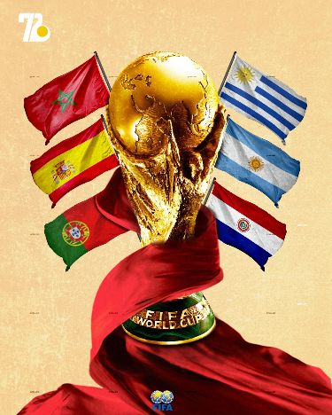

English Premier League
4K · FHDEvery fixture from every matchweek, live with multi-camera coverage — the world's most-watched league, in native 4K with zero freezing.
Sky SportsTNT SportsNBC / PeacockbeIN Sports
Never miss a game. Stream Champions League & Premier League, plus La Liga, Serie A, Bundesliga and MLS with premium sports channels — anti-freeze, Smart TV & Firestick compatible, and built for fans in the US & Europe.
Get Instant Access NowEvery kickoff from every host city, streamed live in 4K from anywhere in Europe or North America. Lock in your plan now and be ready when the biggest tournament on Earth begins.

| Tournament / League | Match Fixture | Time (GMT) | Status |
|---|---|---|---|
| UEFA Champions League | Real Madrid vs. Manchester City | 20:00 | Live on BEIN 4K |
| English Premier League | Arsenal vs. Liverpool | 16:30 | Sky Sports Main Event |
| Spanish La Liga | FC Barcelona vs. Atletico Madrid | 19:00 | DAZN LaLiga |
| Italian Serie A | Inter Milan vs. AC Milan | 18:45 | StarTV Sport |
Every fixture from every matchweek, live with multi-camera coverage — the world's most-watched league, in native 4K with zero freezing.
From group stage to the final — all midweek European nights in stunning 4K UHD with pre-match and full-match replays included.
El Clásico and all 380 matches a season, streamed in full HD and 4K with dedicated La Liga channels for international fans.
Juventus, Inter, AC Milan and Napoli — complete Serie A coverage with Italian and international commentary options.
Germany's top flight with the highest goals-per-game in Europe — every Friday through Sunday fixture live in HD and 4K.
Follow Inter Miami, LAFC and all 29 MLS clubs — perfect for North American fans, with prime-time scheduling across US & Canada.
Our load-balanced 10Gbps CDN servers reroute traffic automatically, keeping every live football stream smooth at 99.9% uptime — even during Champions League finals.
Watch every match in native 4K UHD, FHD 1080p, or adaptive HD quality that adjusts to your connection, so you never sacrifice clarity for stability.
Low-latency streaming keeps you ahead of the crowd — see the goal on your screen seconds before your neighbors' cable broadcast, with no buffering pauses.
“I cancelled cable the day I switched. Premier League in 4K with literally zero freezing — even during the Arsenal title run-in. Best money I spend every month.”
“Champions League nights are unreal on this. beIN 4K streams perfectly on my Samsung Smart TV, and the anti-freeze claim is 100% real — no buffering in two years of use.”
“Watch every PL and UCL match from here in Texas with no blackouts. Setup on my Fire TV Cube took 5 minutes and support answered on WhatsApp instantly. Highly recommend.”
Yes — StreamMax IPTV includes all premium football broadcasters: beIN Sports, Sky Sports, TNT Sports, DAZN, ESPN+, Canal+ Sport, and 50+ dedicated sports channels. Every UEFA Champions League, English Premier League, La Liga, Serie A, and Bundesliga fixture is streamed live in 4K & FHD with full EPG schedules.
StreamMax works on virtually every device: Amazon Firestick & Fire TV, Samsung & LG Smart TVs, Android TV boxes (Nvidia Shield, Xiaomi Mi Box), iPhone & iPad, Apple TV, Android phones, MAG boxes, Windows and macOS. Popular apps include IPTV Smarters Pro, TiviMate, IBO Player, and XCIPTV.
Absolutely. We offer a 24-hour free trial with full access to every sports channel — no credit card required. Message our 24/7 WhatsApp support team and receive your trial credentials within minutes to watch live football in 4K completely risk-free.